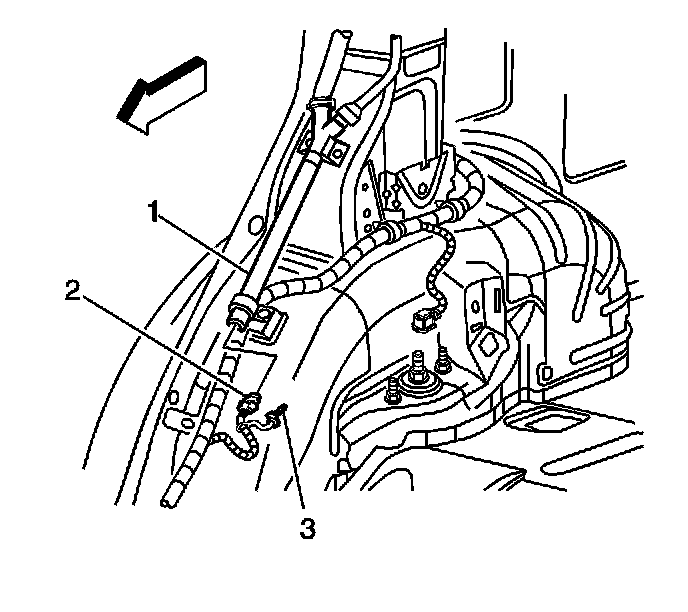
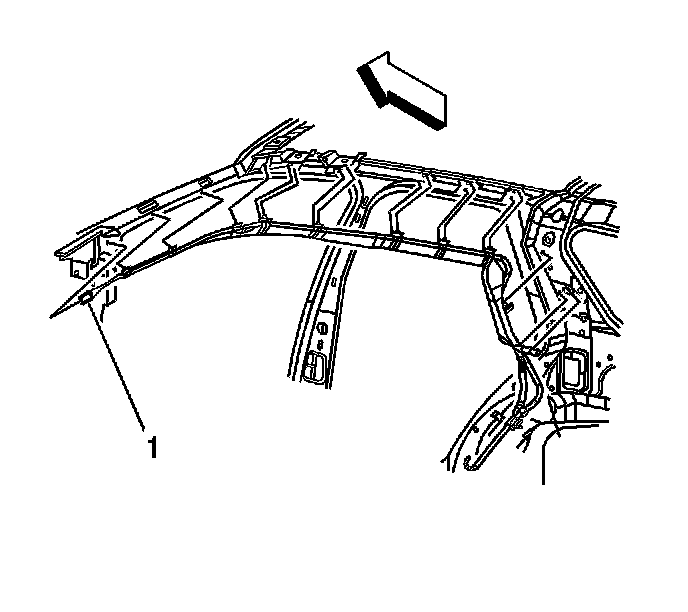

Inflatable Restraint Roof Side Rail Module Replacement - Left
Roof Side Rail Inflatable Restraint Module Replacement - Left Side
Removal Procedure
Caution: In order to prevent SIR deployment, personal injury, or unnecessary SIR system repairs, do not strike the door or the door pillar in the area of the side impact sensor (SIS). Turn OFF the ignition and remove the key when performing service in the area of the SIS.
Caution: Refer to SIR Caution (SIR Caution) .
Caution: Refer to SIR Inflator Module Handling and Storage Caution (SIR Inflator Module Handling and Storage Caution) .
1. Disable the SIR system. Refer to SIR Disabling and Enabling (Service and Repair) .
2. Remove the windshield garnish molding. Refer to Windshield Pillar Garnish Molding Replacement (Service and Repair) .
3. Remove the center pillar garnish moldings. Refer to Center Pillar Garnish Molding Replacement (Service and Repair) .
4. Remove the side door opening garnish molding. Refer to Side Door Opening Frame Garnish Molding Replacement (Service and Repair) .
5. Remove the body side rear trim panel. Refer to Body Side Rear Trim Panel Replacement (w/TB5) (Service and Repair)Body Side Rear Trim Panel Replacement (w/o TB5) (Service and Repair) .

6. Remove the connector position assurance (CPA) (2) from the harness connector to the inflatable restraint roof rail module (1).
7. Lower the headliner to gain clearance to the roof rail module.
8. Disconnect the connector (3) from the roof rail module.
9. Remove the fasteners from the roof rail module.

10. Remove the tether from the windshield pillar (1).
11. Remove the roof rail module from the roof.
Installation Procedure
Caution: Do not strike or jolt the inflatable restraint side impact sensor (SIS). Before applying power to the SIS make sure that it is securely fastened. Failure to observe the correct installation procedures could cause SIR deployment, personal injury, or unnecessary SIR system repairs.
1. Remove any dirt, grease, or other impurities from the mounting surface.
2. Insert the roof rail module tether to the windshield pillar (1).
Notice: Refer to Fastener Notice .
3. Install the mounting fasteners to the inflatable restraint roof rail module.
Tighten the fasteners to 9 N.m (80 lb in).
4. Install the roof rail module connector (3) to the wiring harness.
5. Install the CPA (2) to the roof rail module harness connector.
6. Install the windshield garnish molding. Refer to Windshield Pillar Garnish Molding Replacement (Service and Repair) .
7. Install the center pillar garnish moldings. Refer to Center Pillar Garnish Molding Replacement (Service and Repair) .
8. Install the side door opening garnish molding. Refer to Side Door Opening Frame Garnish Molding Replacement (Service and Repair) .
9. Enable the SIR system. Refer to SIR Disabling and Enabling (Service and Repair) .
10. Fully deploy the module before disposal. If the module was replaced under warranty, fully deploy and dispose of the module after the required retention period. Refer to Inflator Module Handling and Scrapping (Service and Repair) .